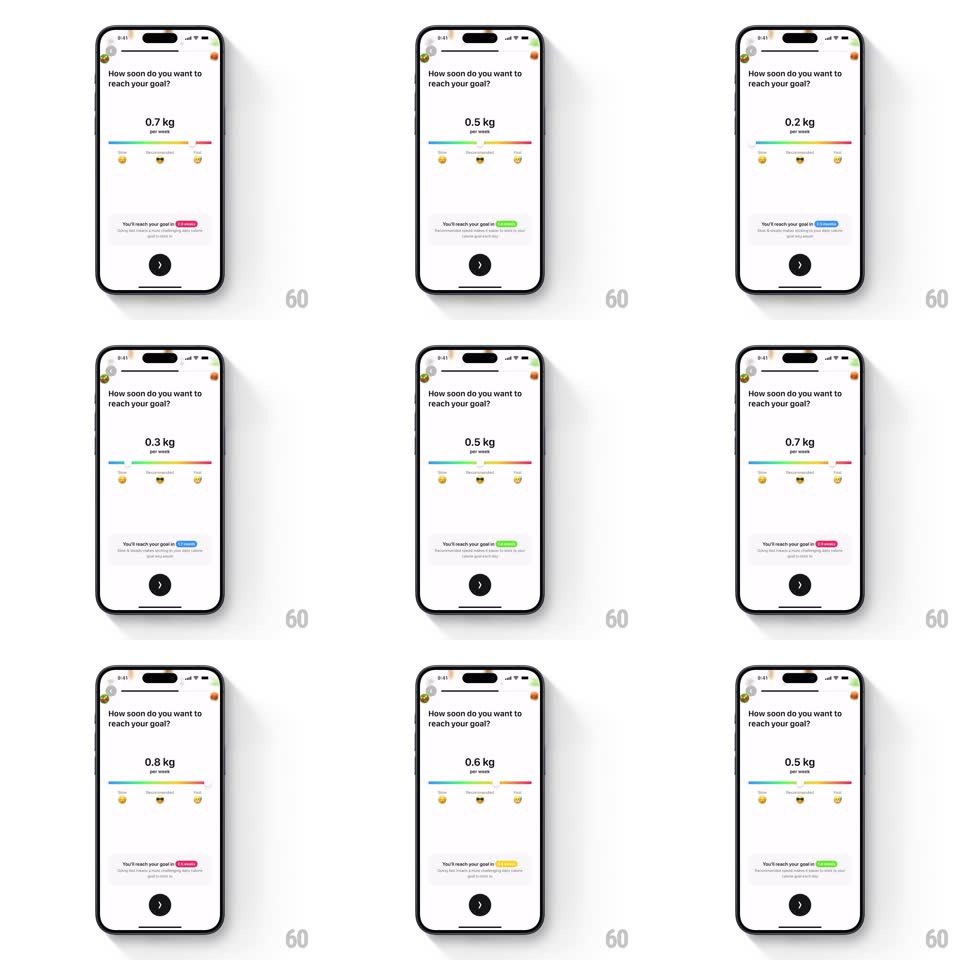

Media
Frame-by-frame

Rebuild this interaction 1:1: Foodllama's goal slider - dragging along a rainbow slider changes the weekly weight goal, the emoji markers, and the result badge's text and color in real time.

Rebuild this interaction 1:1: Foodllama's goal slider - dragging along a rainbow slider changes the weekly weight goal, the emoji markers, and the result badge's text and color in real time.
## Integration
Integration: stack-agnostic spec - springs given as stiffness/damping, timed motions as duration + curve; map every value to your framework and animation library of choice.
## Scene
White onboarding screen "How soon do you want to reach your goal?": a large value ("0.5 kg" over "per week"), a horizontal rainbow-gradient slider with three emoji markers (Slow, Recommended, Fast), a result badge ("You'll reach your goal in <month>") with supporting text, and a circular next-arrow button.
## Motion spec
Pattern: gesture-driven slider with live readouts.
- Drag: the thumb tracks 1:1; the value updates per 0.1 kg step with a quick digit slide (100ms) and a small scale tick (1 -> 1.06 -> 1, 150ms).
- Track: the gradient fill follows the thumb; the nearest emoji marker grows (scale 1.3, spring ~420/18) and the others shrink back.
- Badge: as the thumb crosses zone boundaries the badge crossfades its text (200ms) and tints to the zone color (blue slow -> green recommended -> yellow -> pink fast, 200ms).
- Release: the thumb snaps to the nearest 0.1 step (spring ~380/22, 200ms).
## Calibration
- Value, fill, emoji emphasis, and badge color are all continuous functions of thumb position - nothing waits for release except the step snap.
- The value stays centered; only its digits move.
## Reduced motion
Keep 1:1 tracking; remove the scale ticks.
## Don't miss
- The badge color and text change mid-drag, not on drop.
- The emoji markers are part of the track, not labels under it.